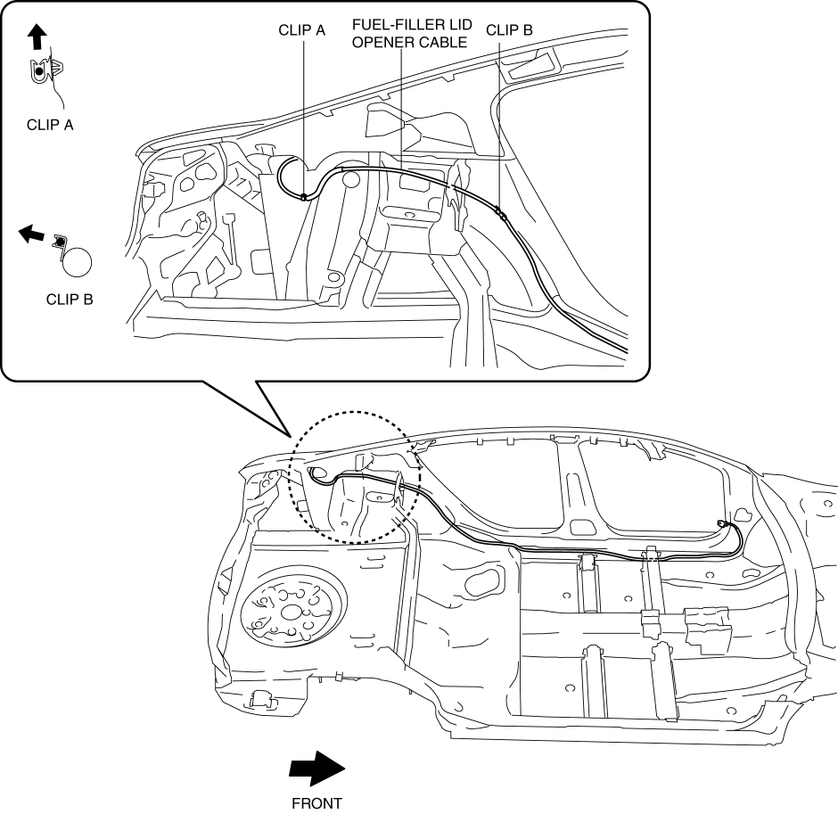
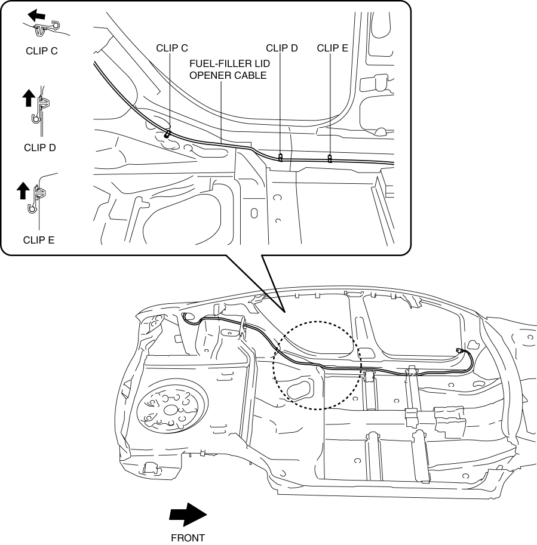
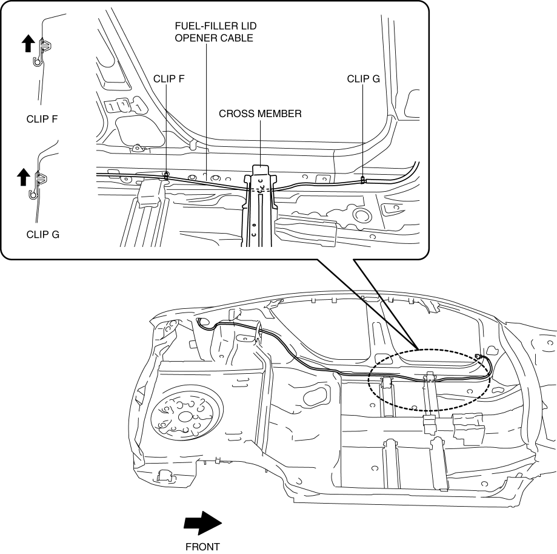

< Previous
Next >
2014 -
Mazda6 -
Body and Accessories
FUEL-FILLER LID OPENER CABLE REMOVAL/INSTALLATION
1. Disconnect the negative battery cable. (See NEGATIVE BATTERY CABLE DISCONNECTION/CONNECTION [SKYACTIV-G 2.5].)
2. Remove the following parts: a. Front scuff plate (LH) (See FRONT SCUFF PLATE REMOVAL/INSTALLATION.)
b. Front side trim (LH) (See FRONT SIDE TRIM REMOVAL/INSTALLATION.)
c. Rear scuff plate (See REAR SCUFF PLATE REMOVAL/INSTALLATION.)
d. B-pillar lower trim (LH) (See B-PILLAR LOWER TRIM REMOVAL/INSTALLATION.)
e. Lap pre-tensioner seat belt (See FRONT SEAT BELT REMOVAL/INSTALLATION.) (With lap pre-tensioner seat belt.)
f. Rear seat cushion (See REAR SEAT CUSHION REMOVAL/INSTALLATION.)
g. Rear side seat back (See REAR SIDE SEAT BACK REMOVAL/INSTALLATION.)
h. Trunk end trim (See TRUNK END TRIM REMOVAL/INSTALLATION.)
i. Trunk side trim (LH) (See TRUNK SIDE TRIM REMOVAL/INSTALLATION.)
j. Fuel-filler lid opener (See FUEL-FILLER LID OPENER AND LEVER REMOVAL/INSTALLATION.)
k. Fuel-filler lid opener lever (See FUEL-FILLER LID OPENER AND LEVER REMOVAL/INSTALLATION.)
3. Remove the fuel-filler lid opener cable from clips A and B.

4. Remove the fuel-filler lid opener cable from clips C, D, and E.

5. Remove the fuel-filler lid opener cable from clips F and G.

6. Pull the fuel-filler lid opener cable from the crossmember.
7. Install in the reverse order of removal.
< Previous
Next >
© 2012 Mazda North American Operations, U.S.A.